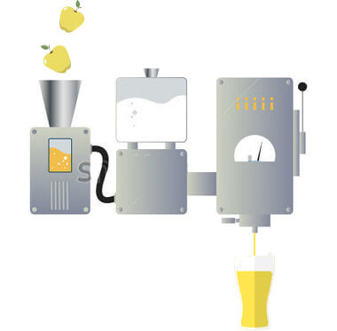
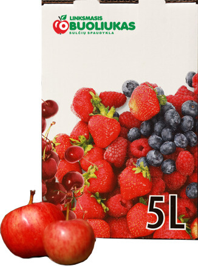
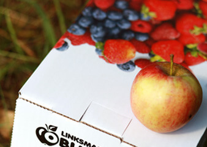
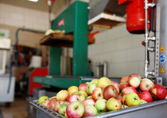
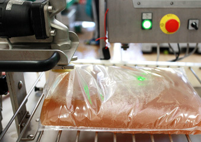
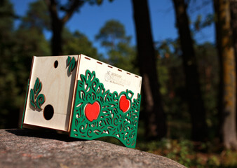

Spaudžiame obuolių sultis!
Greitai. Pigiai. Išpilstome į specialias 5 litrų pakuotes su kraneliu.
Kaip tai veikia?

Kaip tai veikia?
1Pirmiausia obuoliai patenka į vandens vonią
2Paskui transporteriu keliami į traiškyklę-smulkintuvą
3Gauta obuolių masė preso pagalba spaudžiama 300 barų slėgio jėga
Šviežiai spaustos sultys tausojančiai pakaitinamos iki 78º- 80º C temperatūros ir čia pat išpilstomos į maišelius su integruotu kraneliu.
Reikalingi švarūs, be puvinio obuoliai, nes nuo to priklauso Jūsų sulčių kokybė.
Iš 100 kg šviežių obuolių gaunama apie 70 litrų sulčių.



Maišelis dėžutėje - tiesiog labai praktiška pakuotė.
Pakaitintas sultis išpilstome į patogius 5 litrų talpos maišelius, kurie dedami į kartoninę dėžutę.

Sultis pakuotėje galite laikyti 24 mėn.
Nereikia skubėti išgerti, galite mėgautis neskubėdami
Pradėjus sultis ragauti, jos pakuotėje nerūgsta iki 3 mėn., nes ypatinga kranelio technologija nepraleidžia į maišelio vidų oro
Ją galima laikyti kambario temperatūroje, nereikia šaldytuvo
Patogu įsipilti sulčių ir vaikams. Savarankiškumas visada vilioja...



